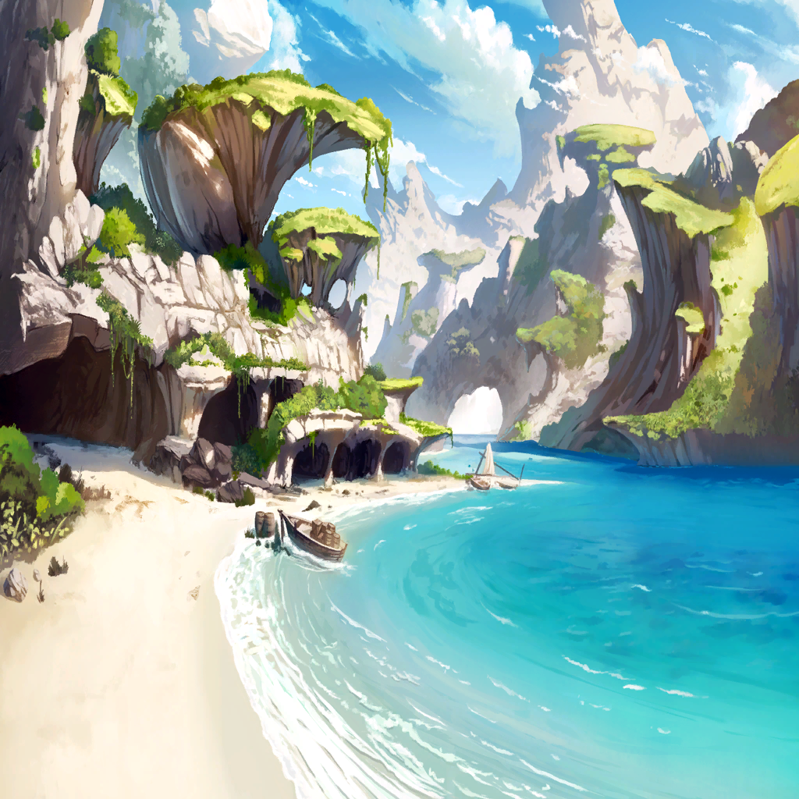
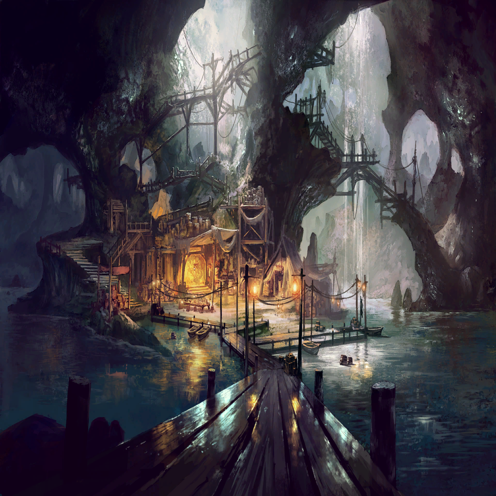

|
|
 |
|
| |
私が海に落ちたのは、
それが最初で、それが最期だった |
| |
逆転する天地
視界を埋める大量の水 |
| |
必死に息をしようと足掻いて、
海水が逆に空気を奪っていく感覚 |
| |
恐怖はあった
苦しさも焦りも、絶望もあった |
| |
一秒ごとに目減りする命の残量に、
今までの人生を想う |
| |
でも、まあ――そういう終わりもあるか
私は体を翻弄する海流の中で、
そんな諦めを思い浮かべ… |
| ？？？ |
恨みはないのか |
| |
絞り出すように、喘ぐように
そう尋ねてくる“声”を聞いた |
| ？？？ |
なぜ自分が、とは思わぬのか
難を逃れた同胞を羨みはせぬのか |
| |
そんなことを、言われても |
| |
これは私の運の問題で、
これは私の鈍くささの問題で
ああ、でも―― |
| |
もう二度と
こんな風に死ぬ人が
いなければいいとは思う |
| |
ここはくらくて
つめたくて
とてもくるしい。だから |
| ？？？ |
…………そうか |
| |
声の主は、それで何も言わなくなった
それが、少し寂しい |
| |
できれば、せめて、最期まで
誰かの熱を感じていたかったから… |
|
 |
| メサルティム |
陸が近いな |
| ラオン |
ああ、もうすぐ俺たちの本拠地さ
サリア、船員どもに着港の準備をさせておけ |
| サリア |
わかってます
というか、準備はもう終わってます |
| サリア |
船長が腑抜けている間、
誰がこの船を動かしてたと思ってるんですか |
| ラオン |
おっと、そりゃそうだ！ |
| ラオン |
だがまあ、今は俺が船長だ
そのことに異論はないんだろう？ |
| サリア |
それは、そうですね |
| ラオン |
さすがの俺も少しは懲りた
しばらくは、真面目な船長に戻るつもりさ |
| ラオン |
…海賊が真面目ってのも、まあ
おかしな話だがな |
| サリア |
ええ、そうしてください |
| メサルティム |
………… |
| サリア |
…何が可笑しいんですか？ |
| メサルティム |
いや、似合いのふたりだと思ってな
人と人の関係性はよく知りはしないが |
| メサルティム |
お前たちは、良い連れ合いに見える |
| サリア |
す―― |
| サリア |
少しは見る目があるようですね？
意外と話が分かるヒトで良かったです
あ、夕食に食べたい物とかありますか？ |
| メサルティム |
いや、特にないが… |
| サリア |
まあ、私と船長は？
運命共同体みたいな？
ところもありますし？ |
| メサルティム |
…なるほど、愛されているな。船長 |
| サリア |
あ――愛というのは、その…
ちょっと言い過ぎでは!? |
| ラオン |
………… |
| クェンス |
なんか面白い人間関係ができてんな
やべえ、めちゃくちゃ茶化したい… |

ワギナオ |
止めておけ
ああいう手合いは、
外野がバカを見ることが多いんだ |
ワギナオ |
…下手に口を挟むと、
面倒事がまとめてこっちに雪崩れ込むぞ |
| クェンス |
お、おう…
妙に実感のこもった返しだな？ |
ワギナオ |
まあな… |
| リル |
仲がよすぎてけんかする？ |
ワギナオ |
そんな感じだ
リルも気をつけろ
人生の無常を味わうことになるからな… |
| クェンス |
いや、実感こもり過ぎだろ… |

ザフィリス |
悪いが、また別行動になる |
| クェンス |
例の、
メルビレイって竜のところに報告か？ |
ザフィリス |
ああ。どんな理由があったにせよ
約定を果たせなかった以上、
弁明は必要だろう |
| セルジーク |
気が…重いです… |
ワギナオ |
そんなに恐ろしい相手なのか？
その、メルビレイという竜は |
| セルジーク |
とんでもありません！ |
| セルジーク |
メルビレイ様はとても慈愛深く、
優しいお方！ |
| セルジーク |
僕らの失敗も、
きっと笑って許してくださいます |
ワギナオ |
なら… |
| セルジーク |
そして許した後、
こっそり悲しいお顔をされるのです…
僕はそれが耐えられなくて… |
| クェンス |
…ある意味厄介な上司だな
叱る時は叱ってもらわんと
部下も困るだろうに |
| セルジーク |
いえ、すべては僕のいたらなさが…
僕がもっと…
そう、魔物たちをあと五倍くらい… |
ワギナオ |
それは、俺たちが死んでたな？ |
| セルジーク |
わわ、そうでした！
もっと別の解決を模索するべきでした… |
| クェンス |
（最初から盾だけが目的って
言っておけば…という話だが） |
| クェンス |
（まあ、あの船長が女のほうに
ご執心だって気づいてなきゃ
考えつかない提案か、これは） |
| クェンス |
（コイツ、ガキっぽいし…
そういう機微にはまだ疎そうだしな） |
| セルジーク |
…？
クェンス様、僕の顔に何か？ |
| クェンス |
いや、なんでもない
で、竜の住処に戻るわけだ |
| セルジーク |
はい！ 盾の無事と、その…
メサルティム様の拒絶をお伝えして
対応を検討いたします |
ワギナオ |
その結果、また敵対する可能性は？ |
| セルジーク |
………… |
| クェンス |
おい… |
| セルジーク |
その時は、お互い頑張りましょうね！ |
| リル |
てんどんだー！ |
ザフィリス |
…お前たち、
リルに変な言葉を教えたか？ |
| クェンス |
俺らじゃねえよ!? |
| セルジーク |
では、失礼いたします！
行きましょう、ザフィリス様 |
ザフィリス |
ああ |
| クェンス |
行ったか… |
| ラオン |
お、そっちの話も終わったか？ |
ワギナオ |
ああ。もうじき港という話だが |
| ラオン |
ああ、もう見えてきたぜ
あれが―― |
|  |
| ラオン |
俺たちの本拠地
――海賊島だ |
| クェンス |
そのまんまだな… |
|  |
| ラオン |
接舷完了っと！
ただいま、俺たちの宝島！ |
| ラオン |
よぉし、手前ら！
船の荷物はここで全部下ろせよ |
| ラオン |
くだらん現実（いたみ）も苦しみも、
残らず陸に置いていけ！ |
| ラオン |
なにせ次の航海も、
夢のような大冒険になるんだからな…！ |
| 船員たち |
へい、船長…！ |
| クェンス |
たいした元気だな。つい今しがた、
海の藻屑になりかけたとは思えんぞ |
| サリア |
こう言ってはなんですが…
あの程度のトラブルはわりと日常なので… |
| クェンス |
命が幾つあっても
足りなくないか？ それ |
| サリア |
でも、冒険ってそういうものでしょう？ |
| クェンス |
…まあ、確かに
俺も他人のことを言えた義理じゃないしな |
ワギナオ |
しかし、これは…
島を丸ごと拠点にしているのか？ |
| リル |
ほかにも、お船がいっぱいあるー！ |
| サリア |
ええ、ここは私たちラオン海賊団が
この海域に持つ拠点のひとつです |
| サリア |
他の海賊たちにも開放しているので、
すべてが私たちの船、
というわけではありませんが |
ワギナオ |
海賊の島、というわけか。だが… |
ワギナオ |
見たところ、海賊には見えない身なりの者
もそれなりにいるようだが |
| サリア |
そこの彼には話したと思いますが…
この層では、
人は奪わなくとも生きていけるものです |
| サリア |
だからこそ警戒というか、
境界があいまいなのです |
| サリア |
明確な定義が崩壊しているというか、
船に乗ってそう名乗れば、
もう海賊というか… |
| サリア |
私としては、はなはだ不本意ですけれど |
ワギナオ |
なるほど、
では彼らは“海賊を名乗る”商船団なのか |
| クェンス |
身を守る術としては悪くないな
襲われるくらいなら、
襲う側を装おうってわけだ |
| ラオン |
まあその分、
金は出してもらってるけどな |
| ラオン |
俺たちの冒険には、山ほどの物資が必要だ
船も船員も、
全力で回すとなると出費が嵩むからな |
| ラオン |
そりゃこの層は、
食うに困らないほど豊潤だが… |
| ラオン |
いざ、それ以上を集めようと思うと
これがなかなか時間がかかる
そして冒険に出るのが遅れていく… |
| クェンス |
だから、下働きを任せてるわけか
見返りは…護衛ってところか？
この海には、魔物もうじゃうじゃいるしな |
| ラオン |
ま、そんなところだ
そんなの海賊のやり方じゃないって
そう言う連中もいるにはいるが |
| ラオン |
俺たちは、
こういう方法を選んだわけさ |
| ラオン |
だからまあ、この島は安全だ
ザフィリス…だったか？ |
| ラオン |
あの竜のお使いが終わるまで、
いてくれても構わないんだぜ |
| クェンス |
…もちろんタダで？ |
| ラオン |
代金はすでに貰ってるさ、命の恩人 |
| ラオン |
サリア、
コイツらを来客用の部屋まで案内してやれ |
| サリア |
わかりました
船長は―― |
| ラオン |
俺は次の航路設定さ
…フラれちまったのは悲しいが、
事実は事実として受け入れないとな |
| ラオン |
恋が破れた以上、
俺に残ってるのは夢だけだ |
| ラオン |
今度は、そうだな…
この海の果てでも見に行ってみるか！
ははは!! |
| サリア |
…まったく、空元気なのが丸わかりです |
| クェンス |
まあ、切り替えられてるんなら
いいじゃないか |
| クェンス |
そっちも、
変につき纏われなくて良かったな？ |
| メサルティム |
………… |
| メサルティム |
これが、人の営みか… |
ワギナオ |
メサルティム？
どうかしたのか |
| メサルティム |
いや、人間とは案外多くいるものだな |
| クェンス |
ここはむしろ少ないほうだぜ？
他の層なら、もっと人で
ごった返しててもおかしくない |
| メサルティム |
…そうか
私ひとりの手には余るかもしれんな |
| クェンス |
おい、まさか… |
|
| メサルティム |
お前たち竜は、雑過ぎる
その行いに巻き込まれた人間が
どう傷つくのかを理解していない |
| セルジーク |
うっ、それは…
今回のことは、僕も考えが浅かったと… |
| メサルティム |
なので、これからは私が守ろう |
|
| クェンス |
本気で、
すべての人間を守るつもりだったのか
あれは |
| メサルティム |
結果、無知ゆえの大言となった
今後はもう少し
考えて行動すべきかもしれんな |
| クェンス |
ありゃ、ただの啖呵なんだから
そこまで真面目に捉える必要ねえだろ… |
| メサルティム |
私はできないことを約するつもりはない
だが、ふむ…協力者が要るか |
| サリア |
はいはい、
益体のない妄想はその辺でストップです |
| サリア |
今からみなさんの部屋に案内しますから、
ちゃんとついて来てくださいね |
| サリア |
ここ、みんなが勝手気ままに増築するので
わりと迷いやすい構造ですから |
| リル |
はーい！ |
 |
| サリア |
ここです
中にあるものは自由に使っていただいて
構いません |
| クェンス |
なるほどねえ
ここが俺たちの仮の新居ってところか
…船室と大差ないな？ |
| 船員 |
そこは勘弁してくれや
この島には船大工しかいねえんだ |
| 船員 |
陸に上がったからって
一々役割変えてたんじゃ、
色んな仕事が滞っちまう |
| 船員 |
そもそも俺たち、
陸には年にひと月もいねえからな |
| クェンス |
船での生活が本分で、
陸に上がるのは
あくまで補給の為ってわけか |
ワギナオ |
だが、雨露をしのげるのは有難い
あと、潮風もだが… |
| リル |
髪、べたべたなの |
| サリア |
ああ、なら島の奥に水場があります
後で、水浴びでもしますか？ |
| リル |
するー！ |
| クェンス |
子供は元気だねえ |
ワギナオ |
………… |
| クェンス |
…なんだよ？ |
ワギナオ |
いや、別に年寄りくさいな…
とは思っていないぞ |
| クェンス |
………… |
| メサルティム |
私も、彼らと一緒か？ |
| サリア |
それは、正直悩みどころなのですが… |
| サリア |
今のあなたは自我がある、ように見えます |
| メサルティム |
ああ、自分の意志で動いているつもりだ |
| サリア |
でも、いつまた目覚めた時の
暴れ牛のような状態になるか
わからないでしょう？ |
ワギナオ |
牛…？ |
| サリア |
例えです。例え |
| サリア |
そこで、あなたにはこの少女…
リルと、一緒にいて欲しいと思います |
| クェンス |
そういえば、あの時この女を止めたのも
リルの言葉だったか |
| サリア |
ようは、安全装置ですね
この島には壊されると困るものも
結構あるので… |
| メサルティム |
妥当な提案だ。呑もう |
| リル |
わたしもめさめさと一緒、うれしいー |
| クェンス |
いや待て
できれば別室を用意してほしいんだが
男子組と女子組って感じで |
| メサルティム |
なぜだ？ |
| クェンス |
なぜも何も、そっちのほうが楽だからだよ
長期滞在するってんならなおさらだ |
| クェンス |
やれ着替えだから外に出ろ、
やれ風呂場の水は替えろ…
面倒くさいことこの上ない |
ワギナオ |
実際に言われたんだな？ |
| クェンス |
そうだよ…！ |
| メサルティム |
いや、私は別に気にしないが |
| クェンス |
それはそれで…！ なんかヤだ…！ |
ワギナオ |
…子供の癇癪か？ |
| メサルティム |
面倒なのはこの男のほうではないか？ |
| サリア |
ああ…そうですね… |
| サリア |
わかりました
リルとメサルティム…
ふたりは、私が引き取りましょう |
ワギナオ |
いいのか？ |
| サリア |
私の家、近くなので
まあ、ここと同じ広さですけど |
| サリア |
それで構いませんね？ |
| クェンス |
ああ、助かる |
| リル |
わたし、おいだされる？ |
ワギナオ |
いや別にそういうわけでは… |
| サリア |
大丈夫ですよ、リル
思春期真っ盛りの男たちに
配慮してあげましょうというお話です |
| リル |
？ |
| サリア |
いつでも会いに来れますし、
呼べばもちろん飛んできます
…ですよね？ |
| クェンス |
まあ、それくらいならな |
| サリア |
ですって |
| リル |
なら、いいかー |
| サリア |
そうと決まれば、早速行きましょうか
ええと、あなたたちの荷物は… |
| リル |
きのみきのままー |
| メサルティム |
同じくだ |
| サリア |
…ちょっと市場に出て、生活用品とか
仕入れましょうそうしましょう |
| クェンス |
…行ったか？ |
ワギナオ |
…そのようだ |
| クェンス |
まったく、
他人の子供の面倒ってのは神経使うな
マジで |
| 船員 |
お前ら、苦労してんな… |
| クェンス |
地元での子守りに比べりゃ、
気楽ではあるがな |
| 船員 |
ま、ここではのんびりしててくれよ
サリアもあれで、面倒見は良いからな |
| 船員 |
なんかあったら気軽に呼べよー？ |
ワギナオ |
で、この後はどうする？ |
| クェンス |
どうするも何も、
ザフィリスの報告待ちだろ |
| クェンス |
ま、たまにはのんびり
惰眠を貪るのも悪くないさ
アンタも、しっかり休んどけよ |
ワギナオ |
ああ…そうだな |
 |
| セルジーク |
あ、あの…メルビレイ様？
ただ今、戻りました… |
| セルジーク |
あのですね？ あのですね？
ザフィリス様のご助力もあって、
なんとか白き盾は見つけたのですが… |
| セルジーク |
…あれ？ お出迎えがありませんね？
いつもは、帰ってくるとすぐに―― |
| セルジーク |
ざ、ザフィリス様？ |
ザフィリス |
下がれ、セルジーク
…どうやら、先客がいるようだ |
| セルジーク |
先客…って |
 |
| セルジーク |
これは…！ |
ザフィリス |
この、怒りに満ちた炎…
メルビレイの力ではないな |
| 生きた炎 |
――――…！ |
| セルジーク |
神聖なる…この寝所に…
暴虐の炎を放つなんて |
| セルジーク |
許せません！ |
ザフィリス |
メルビレイの安否を確認する為にも、
この炎を消さねばならないか… |
ザフィリス |
前衛は私が引き受ける
セルジークは背後から援護を |
| セルジーク |
わかりました！ |
ザフィリス |
（――だが、この炎
そしてこの空間に満ちるマギル…） |
ザフィリス |
いや、今は目の前の事態への対処が先だ |
ザフィリス |
我が爪牙は摂理の体現
カタチ無き炎とて、
この暴威を逃れることはない…！ |